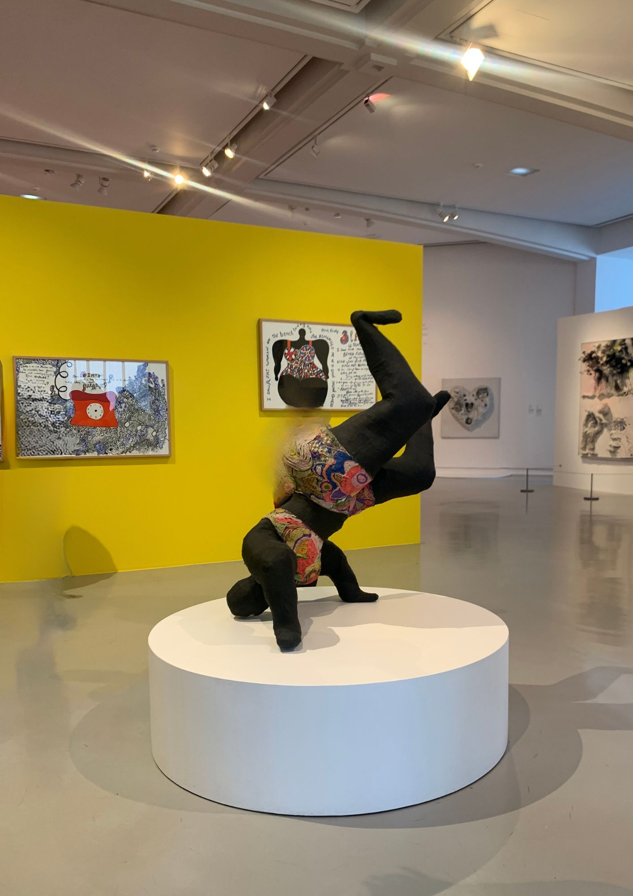
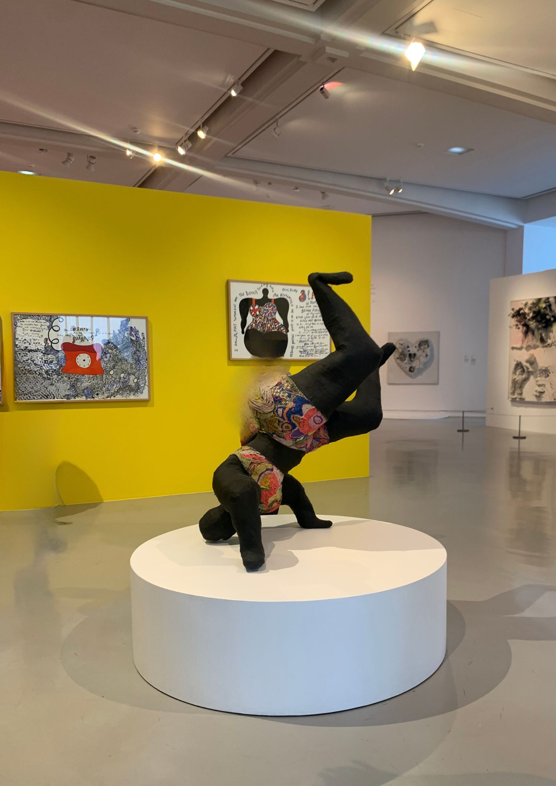

Dechewsky est un amoureux de l’art et un collectionneur depuis toujours. Originaire de la région, il a grandi entouré de culture et a voyagé dans le monde pour découvrir l’art à travers celui-ci.
C’est à Paris, lors de ses études en Histoire de l’art, qu’il fait la découverte de Nikki de Saint Phalle. L’artiste a su résonner en lui. Sa fascination pour les œuvres de Nikki de Saint Phalle l’a amené à fonder Les Nanas, une galerie unique à Nice, dédiée à l’univers puissant et coloré de cette artiste.
En 2016, lorsqu’il décide de revenir dans sa ville natale, il est habité par le désir de partager sa passion à tous. Deux ans plus tard, il inaugure Les Nanas, une galerie dédiée à l’univers singulier de l’artiste peintre. Avec Les Nanas, monsieur Dechewsky a voulu créer un espace où l’art et l’authenticité se rencontrent. Sa galerie est ainsi devenue un lieu emblématique pour les passionnés d’art contemporain.
Aujourd’hui, Les Nanas attire chaque année plus de 20 000 visiteurs, venus de toute la France et de l’étranger. Le collectionneur niçois est fier de constater qu’il s’agit bien plus qu’une simple galerie : c’est un espace d’échange et d’émerveillement.


 
